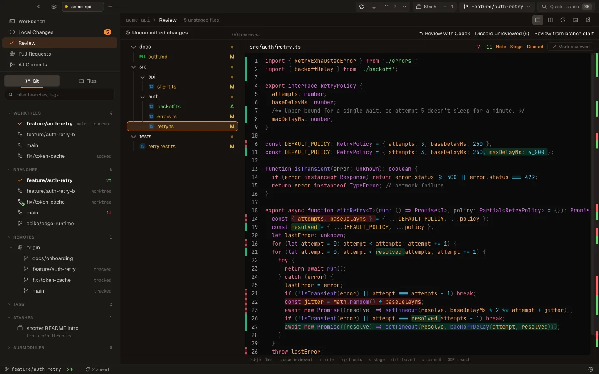

Git client · Windows, macOS & Linux v1.5.1
Read what your agent wrote.
Ship it from the same window.
Strand is a fast, keyboard-first Git client with a review surface built for agent diffs: whole files, a queue, and a baseline that includes what the agent already committed. Underneath is a complete everyday Git client — staging, graph, rebase, worktrees, pull requests.
Free for individuals · no account · no telemetry
Same hue rotation as the app's Appearance settings.

It's the real app. Switch surfaces in the sidebar or with ⌘1–⌘6, press ⌘K for the command palette, j / k to step a queue. Restart in the title bar resets the sample repository.
- 01Try it above. Click Workbench, Review, or a worktree. Nothing you do here touches a real repo.
- 02Download for your platform. macOS, Windows, or Linux — free for individuals, no account.
- 03Open a repository. ⌘O, pick a folder, and Strand works with the Git you already have installed. Getting started →
01 — Review agent changes
The diff is new to you, it's big, and it keeps moving.
Review it like that.
Most Git clients show the hunk you already wrote. Strand's Review surface assumes the opposite: you didn't write it, you need the whole file to judge it, and the agent may have committed halfway through.
-
Whole files, not keyholes
Every changed file renders in full with the edits inline. A change map beside the scrollbar shows where every edit sits; click to jump. A file-tree queue tracks what you've read — j/k to step, space to mark reviewed.
4/8 reviewed · staged files stay visible -
Pin a baseline the agent can't outrun
Review from branch start captures every commit since the detected fork point — including work the agent already staged or committed — as one diff. Agents commit as they go; your review shouldn't care.
Session since 9c4e7a1 · committed + staged + unstaged -
Notes that travel back to the agent
Leave notes on files as you read. Notes persist with their baseline, so switching review targets never mixes two agents' feedback. Copy feedback builds one prompt to paste into the agent. Stage what's good; discard the rest — recoverably.
✎ Copy feedback (3) → paste into your agent -
A second reader, on your terms
Your Codex or Claude Code subscription can inspect the exact review set for possible defects. Findings stay pending until you add them as severity-labelled notes. AI review never edits repository files.
Review with Claude Code · findings → notes, never edits
02 — Worktrees
One worktree per agent.
One dashboard for all of them.
Parallel agents want parallel checkouts. Strand's Worktrees view is the session dashboard: what each attempt touched, how far it drifted, whether two of them are about to collide — and one motion to land the winner. See it in the demo →
Every checkout with branch and session labels, dirty count, ±lines, "touched 3m ago", disk size, ahead/behind, and one-click Review pinned where the branch diverged from main. Rows badge merged and unpushed work and warn when parallel worktrees touch the same files.
Select two or more attempts and read them side by side — shared files highlighted — then pick the winner.
Land a worktree's branch (squash, merge, or fast-forward, exact commands previewed) and retire the worktree and branch in one motion. Every removal first archives a full snapshot — uncommitted and untracked files included — restorable later.
New worktrees copy the gitignored setup files you list — .env, local settings — so agents run out of the box. Start from any branch, remote branch, tag, or commit; remote bases fetch first.
03 — Ship from the same window
A whole Git client.
Not just a review pane.
Accepting the agent's work and shipping it never leaves the app: pull requests on GitHub and Azure DevOps, and every everyday Git operation, with the same keyboard model.
Pull requests GitHub · Azure DevOps
- Inbox of the latest 100 PRs — All, Authored, Completed — with the PR for your checked-out branch opened and followed automatically.
- Summary, Timeline, and Code tabs: rendered descriptions, newest-first chronology, lazily loaded diffs with viewed/changed progress.
- Read review threads beneath their code, reply, resolve, and queue line comments into one draft submitted as Comment, Approve, or Request changes.
- A readiness ledger combines review, checks, conflicts, and merge state; merge with merge-commit, squash, or rebase.
- Create a PR or draft for the checked-out branch — optionally with a title and description drafted by Codex or Claude Code.
- Open any PR's exact head in a new worktree without touching local refs. Auth stays in your signed-in gh / az CLI.
Everyday Git ⌘2 · ⌘3 · ⌘4
- Stage, unstage, or recoverably discard whole change blocks or individually selected lines, inline in the diff.
- Commit graph with SVG lanes, branch/tag chips, inline stash nodes, message/author/hash search, and a scrubbable activity timeline.
- Interactive rebase entirely from the keyboard — reorder, reword, edit, squash, fixup, drop — with Continue / Abort on conflicts, and a three-way conflict resolver.
- Fetch, pull, and push with streaming progress, explicit pull modes, force-with-lease, and upstream management; branches merged via a completed PR are flagged and bulk-cleanable.
- Branches, tags, stashes, remotes, cherry-pick, revert, compare, blame, file history, and a reflog browser for commits a reset orphaned.
- Multiple repos as tabs or an icon rail, saveable as workspaces — import a VS Code .code-workspace. Light, dark, and system appearance.
04 — Workbench
Files, terminals, and your agent
in one resizable workspace.
Workbench (⌘1) is where Strand opens. Out of the box it's one full-size Work surface: editable working-tree files and embedded terminals at the repository root, as tabs. Claude Code runs there with its complete dashboard.
Drag a tab onto a pane edge for a left/right/top/bottom split. Each pane keeps its own tabs; dividers keep a wide grab target. ⌘8 enters layout editing: add Files, Local Changes, Review, history, pull requests, or worktrees as panes, or start from a template — VS Code workbench, Review station, Focus, Blank layout. Each workspace auto-saves its layout.
Content, rendered Preview, History, Compare, Blame, image, and directory modes. Drafts survive navigation and only reach disk through Save. The Files tree lists the real filesystem with Git-state colors, including muted ignored paths.
Settings → Plugins is a bundled marketplace of Workbench surfaces. Heroi is a repository-scoped chat for background Claude, Codex, and Cursor Agent sessions; Quick Notes is a per-repository scratchpad saved in Strand's database. Plugins render from validated manifests — third-party JavaScript never runs in the privileged webview.
AI, on your terms
AI drafts. You commit.
- Commit messagesSubject and body from staged changes.
- PR descriptionsDrafted from the committed branch delta, editable before publishing.
- Review findingsStructured, line-validated, and pending until you accept them as notes.
- Via the CLIs you already pay forCodex CLI (ChatGPT) or Claude Code — no API key. Generation is cancellable, scans for sensitive files before launch, and never silently edits your repository.
05 — Keyboard
Keyboard-first.
Never keyboard-only.
Every surface has a focus model — lists, trees, dialogs, menus — so reviewing an agent session never makes you reach for the mouse. The mouse stays first-class when you want it. And when you forget a key, ⌘K finds everything: commands, branches, tags, files, commits, recent repos.
Every global shortcut is rebindable in Settings → Keyboard. ⌘1…7 jump between surfaces; ⌘ is Ctrl on Windows and Linux. Full list →
- jkstep through the review queue
- spacemark reviewed — and stay put
- npjump between change blocks
- sstage the file
- dddiscard — recoverably
- mleave a note on the file
- ⌘↵commit
- ⌘Keverything else, fuzzy
06 — Performance
Fast is the feature.
Strand's prime directive is written into the repo and enforced in review: stable, fast, performance-first. Reads go through gix, writes through git2 and your system git, and no change ships if it regresses a hot path.
Engine medians on an M1 Pro against synthetic 100k-commit / 10k-file fixtures; cold start measured on Windows 11. Methodology and every number in docs/perf-baseline.md.
git blame says it was you
The commits carry your name.
The agent writes the code, but it ships under your sign-off, in your repo, on your pager at 2 a.m. A Co-Authored-By trailer won't save you in the postmortem. Read it before it merges.
Don't ship shit to prod.
Strand tags agent commits in the graph — the ai chip — and the branch-start baseline rounds up the whole session for review.
Pricing
Free for people.
Honor system for companies.
No feature gates. No license keys. No nag dialogs. The same full app for everyone — the only question is whether a company is making money with it.
For individuals
Free. Forever. All of it.
- Every feature — nothing held back
- No account, no trial clock
- No product telemetry
- Signed auto-updates included
For companies
A one-time commercial license.
- Same app, same features — it's support, not an upsell
- Honor system: no keys, no activation, no phoning home
- A proper commercial license instead of AGPL obligations
- Keeps the project funded and independent
AGPL-3.0 for everyone · one-time commercial license for companies · no keys, no activation, no phoning home
Download Strand v1.5.1
Your agent is already typing.
Be ready to read it. Pick your platform and get the complete Git client — no account, no feature gates.
latest stablesigned updatesfree for individuals All release files ↗